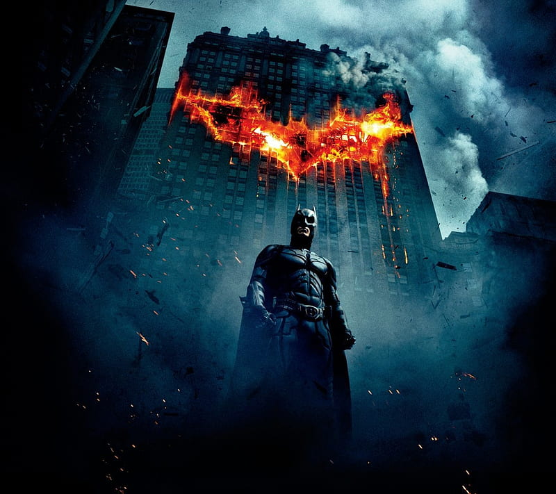
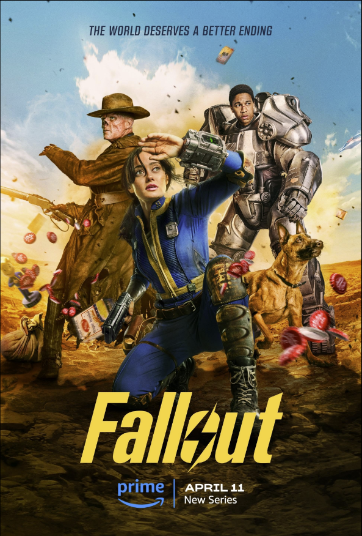

Aksiyon Filmleri
Adrenalin dolu aksiyon sahneleri ve nefes kesici maceralarla dolu olan aksiyon filmleri, izleyicilere heyecan verici bir yolculuk sunar. Hızlı tempolu aksiyon sahneleri ve çarpıcı görsel efektler, seyircileri koltuklarına bağlar ve gerilim dolu bir deneyim yaşatır. Aksiyon filmleri, macera arayan herkes için kaçırılmayacak bir izleme deneyimi sunar.
"The Dark Knight", karanlık ve çarpıcı atmosferiyle Gotham City'nin koruyucusu Batman'in en unutulmaz maceralarından birini anlatıyor. Joker'in kaos ve çılgınlık dolu karakteriyle karşı karşıya gelen Batman, şehri kurtarmak için büyük bir mücadeleye girişiyor. Film, derin karakter analizleri ve çarpıcı görsel efektleriyle izleyicilere unutulmaz bir deneyim sunarken, aynı zamanda adalet ve kahramanlık üzerine derin düşüncelere de yol açıyor.
Drama Filmleri
Fallout dizisi, nükleer savaş sonrası Los Angeles'ta geçen, Vault isimli yeraltı sığınaklarında yaşayan insanların hikayesini anlatıyor. 200 yıl sonra, bu sığınakların sakinleri dışarıdaki tehlikeli dünyayı keşfetmek zorunda kalıyor ve hayatta kalmak için mutantlar, haydutlar ve radyasyonla mücadele ediyorlar. Dizide Vault Boy maskotunun kökenine de ışık tutuluyor.
Komedi Filmleri

Felekten Bir Gece, Las Vegas'ta epik bir bekarlığa veda partisinden sonra hafızalarını kaybeden üç arkadaşın, kayıp damadı bulmak ve düğüne yetiştirmek için çıktıkları çılgın macerayı anlatan bir komedi filmi. Film, Bradley Cooper, Ed Helms ve Zach Galifianakis'in unutulmaz performanslarıyla ve absürt mizahıyla izleyicileri kahkahalara boğuyor. "Felekten Bir Gece", eğlenceli bir film gecesi arayanlar için mükemmel bir seçim!